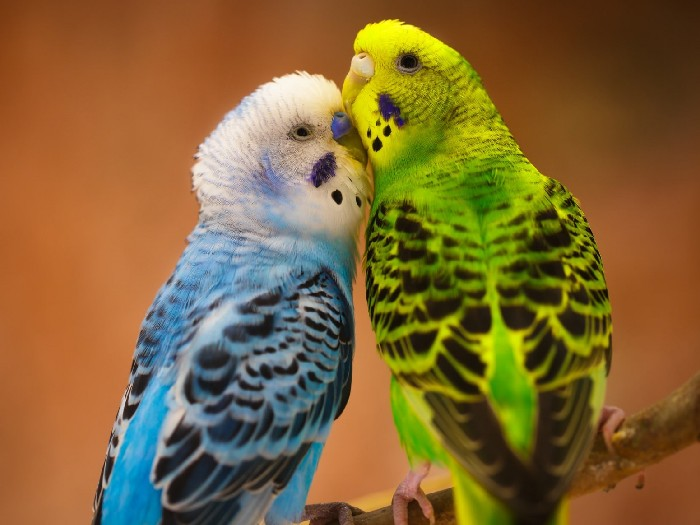

Рассказ о моём любимом попугае
Предисловие

Попугаи, самые известные экзотические птицы,
которых с незапамятных времен люди стали содержать в домашних
условиях, при чем не для получения выгоды, мяса или яиц, а просто как развлечение, так сказать для души. В мире
существуют более трех сотен различных видов попугаев, и все они обитают в странах с влажным
тропическим климатом. Среди множества попугаев есть несколько видов, которые способны копировать услышанные
звуки, в том числе
голоса птиц и человеческую речь.
Однажды я зашел в магазин и увидел эту милую парочку.

Конечно я не смог пройти и поискал несколько интересных
фактов о них:
- В мире существует более 350 видов видов попугаев.
- Попугаи большая группа птиц к сожалению факт что многие из
них оказались сегодня находятся под угрозой исчезновения.
- Попугаи одни из наиболее интеллектуально развитых птиц.
- Наиболее умными и сообразительными считаются
африканские серые попугаи Жако, амазоны и ара, IQ этих попугаев эквивалентен интеллекту четырехлетнего
ребенка.
- На территории Австралии волнистые попугаи живут уже около 5 миллионов лет. Этот факт доказан учеными.
- Это самые разноцветные птицы. Цвет оперения попугаев включает все семь цветов радуги плюс черный и около
сорока оттенков. Наиболее распространены: зеленый, оранжевый, синий, желтый, красный, черный, белый. Большая
часть попугаев имеют многоцветное оперение.
- Попугаи в зависимости от вида значительно отличаются по размеру. Самый маленький попугай дятловый, обитающий
в Новой Гвинее, его длина 8 сантиметров, а вес не более 12 грамм. Самый большой попугай Гиацинтовый ара, его
размеры в длину до 98 см, а вес может доходить до 1,5 кг. Размах крыльев у этого ары около 70-75 см.
- Попугаи одни из наиболее интеллектуально развитых птиц. Наиболее умными и сообразительными считаются
африканские серые попугаи Жако, амазоны и ара, IQ этих попугаев эквивалентен интеллекту четырехлетнего
ребенка.
- Все попугаи в естественной среде обитают только в тропических или субтропических регионах экваториальной
части и южного полушария. Основные территории расселения попугаев в Америке от Мексики до Центральной и
Южной части, а также близлежащие острова. В Африке они населяют Западную и Южную части, в Азии попугаи живут
в Индии и в Юго-Восточной Азии. Наибольшее количество попугаев обитает в Австралии и на прилегающих к ней
островах.
- Интересный факт — среди попугаев есть и хищники. Так попугаи породы Кеа живущие в Новой Зеландии настоящие
хищники, довольно часто они нападают даже на достаточно крупных животных, таких как овцы.
- Попугаи в дикой природе стайные птицы. Колонии патагонских попугаев самые многочисленные, известен факт,
когда в одной такой стае вместе жили 70 тысяч птиц.
- Интересно что попугаи «лори» питаются в основном пыльцой и нектаром, в их рацион входит свыше 1000 разных
цветов.
- Человеческой речи способны подражать только несколько видов попугаев. Так, какаду могут запомнить до 40 слов
и несколько предложений. Попугаи Лори способны воспроизводить порядка 50 слов. Волнистые попугаи могут
повторить около 100 слов, самыми умными считаются попугаи Жако которые запоминают более 500 слов.
- Попугаи однолюбы, они создают пару на всю жизнь. Они заботятся друг о друге, помогают найти еду и спят
рядом.
Также я узнал несколько фактов о строении попугаев:
- Волнистые попугаи самые быстрые. Они кратковременно могут развивать скорость до 120 км/ч.
- Интересный факт — у попугаев нет голосовых связок. Звуки они издают трахеей выдувая из нее воздух.
Высоту звука при этом они изменяют формой своей трахеи, то есть они не говорят, а просто
насвистывают.
- Попугаи на самом деле не умеют разговаривать в привычном смысле этого слова — они просто запоминают
и
повторяют слова. Впрочем, не только слова — они могут запоминать и воспроизводить и какие-нибудь
другие
звуки.
- Попугаи обладают невероятной точностью владения своим клювом, так они в состоянии склевывать семена
с
клубники, не повреждая при этом ягоду.
- Волнистые попугаи видят мир в цвете, угол обзора волнистых попугаев без поворота головы 180
градусов. и
могут слышать звуки в диапазоне от 400-20.000 Герц. Это научно доказанный факт.
- Температура тела волнистого попугайчика составляет 41 градус, а скорость сердцебиения порядка 200
раз в
минуту.
- У попугаев корелла зрение значительно лучше человеческого, они различают больше цветов. Кроме того
корелла могут распознавать в секунду до 150 различных изображений, В то время как мозг человека
может
распознать всего 16.
- У попугаев очень развитые лапы. На каждой у них по четыре пальца, два из которых обращены вперед и
два
назад. Лапы настолько мощные что позволяют им держаться, висеть и раскачиваться на ветках длительное
время. Интересный факт в том что попугаи – единственные птицы которые пищу в клюв подают лапами, при
чем
они могут быть левшами или правшами.
- Интересным фактом для детей будет то, что не смотря на свои относительно небольшие размеры попугаи
обладают огромной силой. Так у попугая Ара сила сжатия клюва может достигать 65 кг. Таким образом он
запросто может своим 10-сантиметровым клювом перекусить человеку палец.
- Попугаи обладают острым слухом и зрением, они хорошо видят семена растений на расстоянии до 10
метров, а
услышать писк в состоянии за полкилометра, при чем для большой эффективность и они могут
поворачивать
голову на сто восемьдесят градусов.
- Самый тяжелый попугай — совиный попугай или капо. Вес взрослого капо до 4 килограммов. Они утратили
способность летать и ведут наземный образ жизни. Но иногда вскарабкиваются на вершины деревьев и
планируют с высоты.
- Самые маленькие попугаи — дятловые, обитающие в Новой Гвинее. Длина тела взрослого дятлового
попугайчика
— 10 см, а масса тела – всего 10-13 грамм.